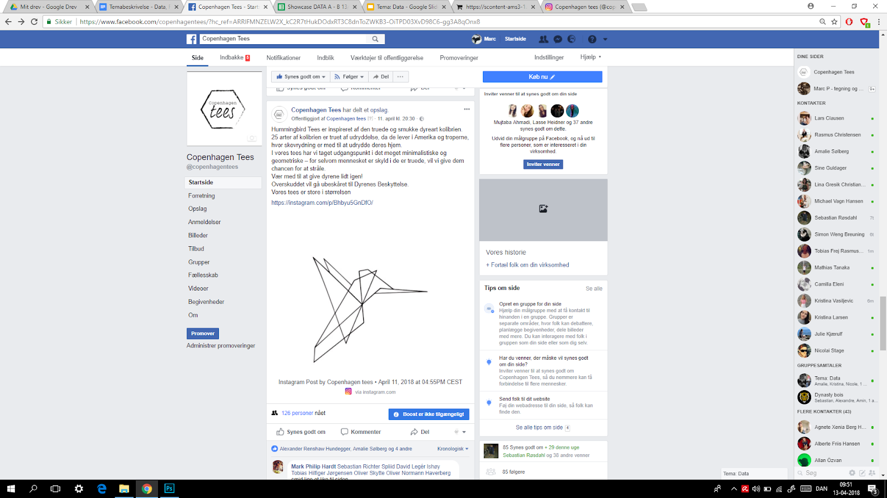
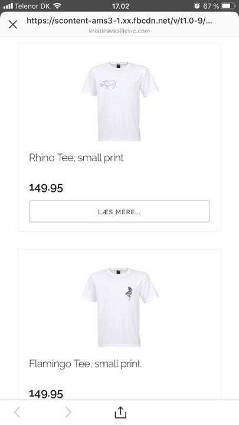
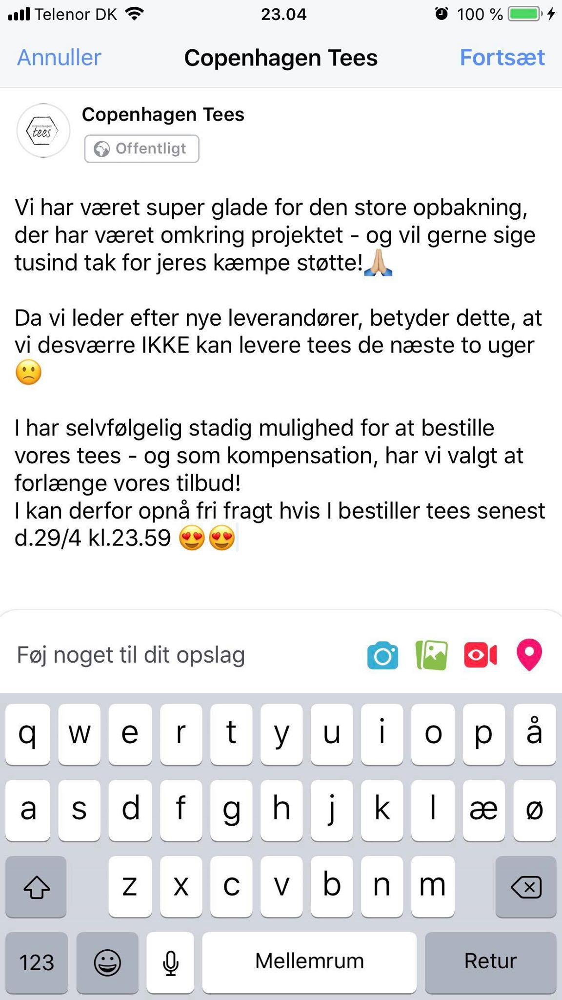
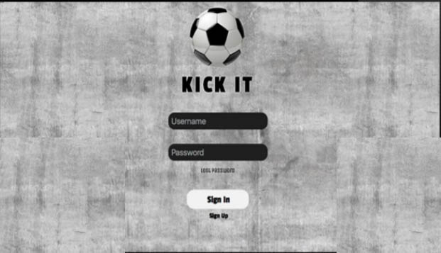

Facebookside

Facebookopslag

WebshoppenInstagram

FacebookopslagInstagramdataNy forsideNy eventsideBusiness model canvas for Gastronomisk InnovationMockup af ny forsideMoodboard til hjemmesideMoodboard til videoForsidenUnderside - Køb af "Ægget"Business Model Canvas for IN2 DesignBrugerscenarieMockup af forsidenWireframe for siden om "Ægget"Mockup af siden om "Ægget"Kick It APP

Mockup: Log på eller opret dig fra computerMockup: Hjemmesiden på forskellige platformeLean Startup Model for Kick ItUser experience